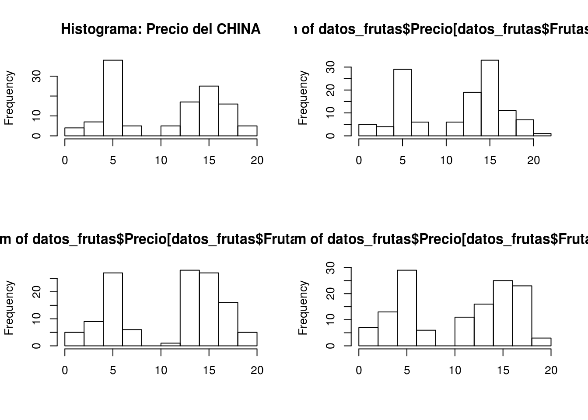

Use la siguiente información para responder las siguientes preguntas:
# tipos de frutas
Frutas <- factor(sample(c("CHINA","KIWI","UVA","FRESA"),size = 500,replace = TRUE))
# precio en dolares por cada 5 libras
Precio <- round(c(rnorm(180,5,1),rgamma(20,2,5),rnorm(300,15,2)),1)datos_frutas Su data frame debe lucir de la siguiente manera:## Precio Frutas
## 1 5.3 CHINA
## 2 3.2 CHINA
## 3 4.2 FRESA
## 4 5.1 CHINA
## 5 4.7 UVA
## 6 4.2 FRESA
## 7 5.1 UVA
## 8 5.1 FRESA
## 9 5.3 KIWI
## 10 5.7 KIWIFUN=. aggregate(datos_frutas$Precio, by=list(datos_frutas$Frutas), FUN=mean)[c(1,2)]Use la función boxplot para hacer un boxplot por grupos. Cada tipo de fruta es un grupo. Debe dar un color diferente a cada boxplot. Debe dar título que incluya su nombre de estudiante. Debe dar nombre para los ejes-y y x.
Interprete el boxplot anterior y comente sobre la simetría de las distribuciones del precio de la fruta.
Ejecute el siguiente código. Debe cambiar el color en cada histogrma, use colores diferentes. Tambien debe asignar título a cada gráfica siguiendo el ejemplo de la primera.
par(mfrow=c(2,2))
hist(datos_frutas$Precio[datos_frutas$Frutas== "CHINA"],xlab = "",main = "Histograma: Precio del CHINA")
hist(datos_frutas$Precio[datos_frutas$Frutas== "FRESA"],xlab = "")
hist(datos_frutas$Precio[datos_frutas$Frutas== "KIWI"],xlab = "")
hist(datos_frutas$Precio[datos_frutas$Frutas== "UVA"],xlab = "")
Ya usted conoce los datos de la media del precio de cada fruta. Ahora viendo los histogramas, ¿Cree usted que la media nos da un buen valor para aproximar el valor promedio de cada fruta? Explique!